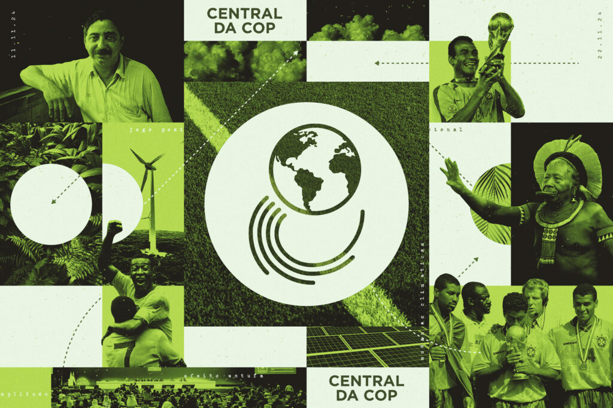
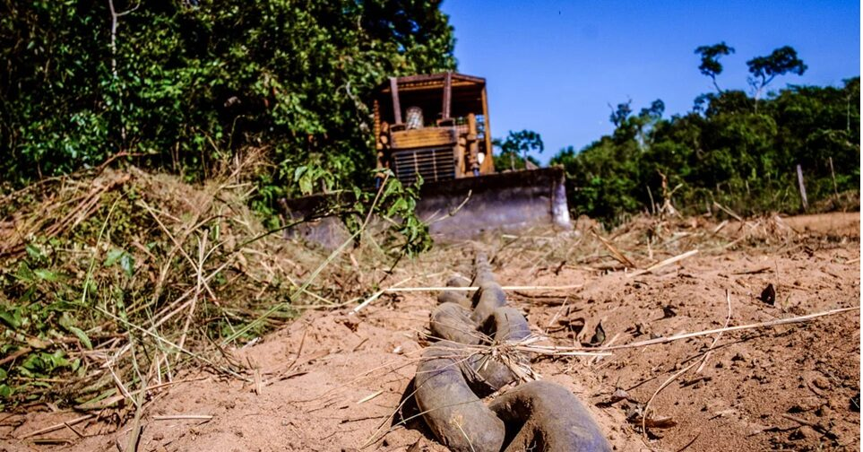

Consequências serão agravadadas em populações de baixa renda e em regiões tropicais
Crianças de 2020 enfrentarão exposição inédita a eventos climáticos extremos, diz estudo
Consequências serão agravadadas em populações de baixa renda e em regiões tropicais
#NOTÍCIAS Central da COP faz tabelinha de clima com futebol na final do Parazão
Iniciativa do Observatório do Clima que leva ao público informações sobre mudanças climáticas de maneira despojada estreia hoje em Belém
Na newsletter: O fim do futuro, embargão do Ibama e Central da COP no Parazão
Edição da quinzena aborda um ano da tragédia no RS, o esorço do Ibama pra conter a derrubada na Amazônia e a goleada contra a desinformação em Belém
#NOTÍCIAS Sociedade civil lança abaixo-assinado pelo fim imediato do “correntão” no país
Prática criminosa chega a desmatar até dez campos de futebol por dia, principalmente no Cerrado
Cheias extremas serão cinco vezes mais frequentes no Rio Grande do Sul, aponta estudo
Agência Nacional de Águas (ANA) indica aumento da magnitude dos eventos hidrológicos no Estado
#NOTÍCIASCongresso se empenhou para agravar a crise climática de 2019 a 2022, mostra estudo
Em discursos, projetos de lei e votações, mandatos adotaram perfil favorável a mais emissão de gases estufa